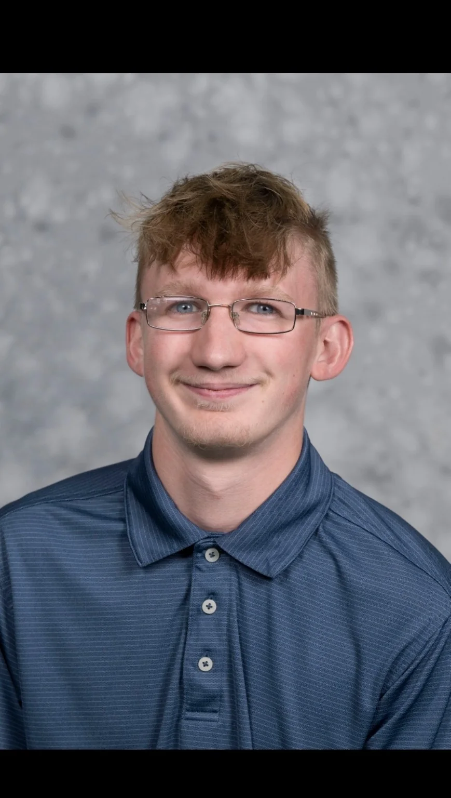
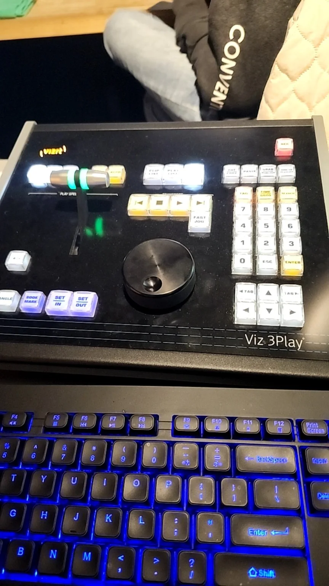
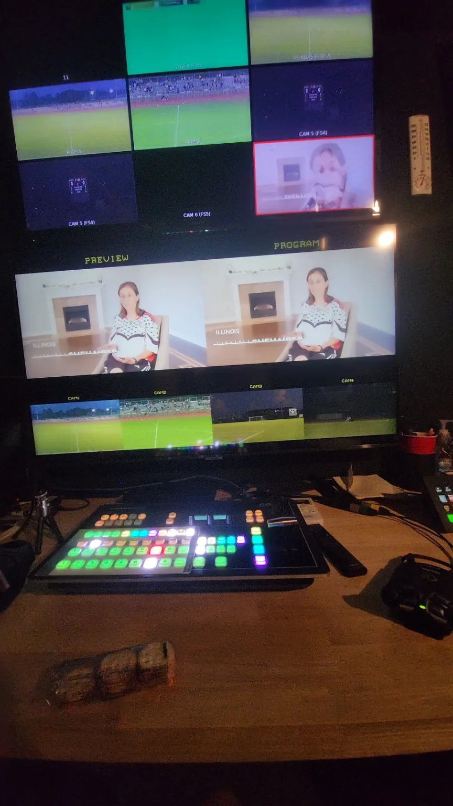

01 / REPLAY
Live sportsSolo replay operator
G-MAC Women's Soccer Championship
During a playoff penalty shootout, I had approximately 10 seconds to find the best angle and get each replay ready for air.
View case study ↗Live sports production / Cedarville University
TECHNICAL DIRECTOR / REPLAY OPERATOR
Aspiring sports producer with experience across more than 50 collegiate games in technical directing, replay, camera, and graphics roles.
“There is a lot of pressure in sports production, but pressure makes diamonds.”

01 / Selected work
Select a channel to preview a project, then explore the work and my role behind it.

During a playoff penalty shootout, I had approximately 10 seconds to find the best angle and get each replay ready for air.
View case study ↗
02 / FILMA comedic student film about a girl who calls on her guy friends for a girls' night after a breakup. My cinematography focused on framing and body language.
Image: production equipment photograph; film-specific still to be added.
View case study ↗02 / On the crew
“The fast-paced manner and the no mistakes mentality is something I thrive in.”
Switching between multiple cameras to get the best shots, communicating with camera operators, and coordinating with the replay operator.
As a solo operator, monitoring the game, quickly finding a replayable moment's best angle, saving it, and getting it on screen live.
Additional production roles across Cedarville athletics broadcasts.
Experience in the audio booth and running OBS for a YouTube livestream.
Recording 30–60 second on-air breaks on topics of my choosing.
Resound Radio spoken break
03 / About
I started with media production and picked up sports for fun but ended up liking it more than media production.
Dependability matters to me. Working in live production means no mistakes and no redos. I want my coworkers to know I will do a good job and communicate with them.
I'm studying Media Production at Cedarville University, with an expected graduation in December 2028. Outside production, I enjoy watching and playing sports, board games with friends, going to the gym, and learning new things.
View résumé ↗04 / Contact
Interested in connecting about live sports production, technical directing, replay, or media production? Reach out by email or LinkedIn.